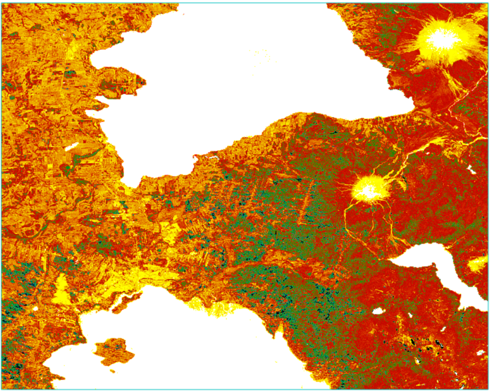

Resumen Ejecutivo
En el contexto de la mitigación del cambio climático, este proyecto evalúa la viabilidad técnica y el potencial de escalabilidad de proyectos de Meteorización Mejorada de Rocas (ERW) en la Región de Los Lagos. Mediante técnicas de teledetección espectral avanzada y modelado climático, se cuantificaron las fuentes de minerales máficos (basaltos) y se analizó su sinergia con las condiciones ambientales locales.
Esta capacidad equivale a compensar las emisiones totales de Chile por un periodo de 3 a 4 años, posicionando a la región como un territorio estratégico para la generación de créditos de carbono de alta permanencia bajo estándares internacionales.
Fundamento Científico
La meteorización de silicatos es el mecanismo geoquímico primario que regula el CO₂ atmosférico en escalas de tiempo geológico. La tecnología ERW busca acelerar este proceso natural mediante la aplicación de polvo de roca basáltica en suelos agrícolas.
Litología (Fuente)
Disponibilidad de rocas volcánicas máficas ricas en cationes divalentes (Ca²⁺, Mg²⁺), esenciales para la mineralización del carbono.
Climatología (Catalizador)
Régimen pluviométrico excepcional (1.984 mm/año) que actúa como solvente para la hidrólisis de los silicatos, acelerando la captura.
Suelos (Sumidero)
Presencia de Andisoles (Trumaos) con pH ácido, que favorecen la disolución mineral sin competir con el uso agrícola existente.
Metodología: Teledetección Satelital
Algoritmo de Detección Espectral (Basalt Target Index)
Desarrollé un índice multiespectral personalizado utilizando imágenes Sentinel-2 para identificar afloramientos basálticos en ambientes húmedos:
- MI (Índice Máfico): Detecta minerales ricos en hierro y magnesio
- FI (Hierro Ferroso): Resalta óxidos de hierro volcánicos
- NDVI: Supresión de vegetación con peso negativo
- MNDWI: Eliminación de cuerpos de agua y turbidez
Este enfoque permitió aislar la firma espectral de la roca basáltica pura, eliminando eficazmente los falsos positivos y asegurando una estimación de superficie precisa.

Figura 1: Mapa del Basalt Target Index (BTI) en la provincia de Llanquihue. Colores cálidos (naranja-rojo) indican mayor concentración de minerales basálticos detectados mediante análisis multiespectral Sentinel-2.
Resultados Cuantificados
| Métrica | Valor | Unidad |
|---|---|---|
| Superficie Detección Bruta | 47.439 | Hectáreas |
| Superficie Minable (15% neto) | 7.115 | Hectáreas |
| Volumen de Roca (@ 5m prof.) | 355 | Millones de m³ |
| Masa Rocosa Disponible | 1.031 | Millones de Toneladas |
| Potencial Remoción CO₂e | ~309 | Megatoneladas |
Nota metodológica: A diferencia de estimaciones teóricas, este estudio aplicó factores de corrección severos para proyectar un escenario de negocio viable, restringiendo el área útil al 15% de la superficie detectada y descartando zonas protegidas, infraestructura y suelos no explotables.
Ventaja Competitiva Regional
El estudio registró una precipitación media de 1.984 mm/año en la zona de interés. Este valor es entre 2 y 3 veces superior al de proyectos ERW en el hemisferio norte (EE.UU., Europa).
La abundancia de agua actúa como un acelerador natural de la reacción química, permitiendo proyectar tasas de meteorización más rápidas y, por ende, una verificación y monetización de los créditos de carbono en plazos financieros más atractivos.
Informe Técnico Completo
Descarga el estudio de factibilidad geoespacial con metodología detallada, validación estadística y análisis de mercado de carbono.
Descargar Informe PDF (4.3 MB)Aplicaciones y Próximos Pasos
Créditos de Carbono
Generación de créditos de alta calidad (High-Quality Removals) con permanencia >1.000 años bajo estándares internacionales.
Co-beneficios Agrícolas
Mejora de pH en suelos ácidos, aporte de micronutrientes (Ca, Mg, Fe) y potencial aumento de productividad.
Monitoreo MRV
Sistema de Monitoreo, Reporte y Verificación mediante análisis geoquímico de aguas y teledetección satelital continua.